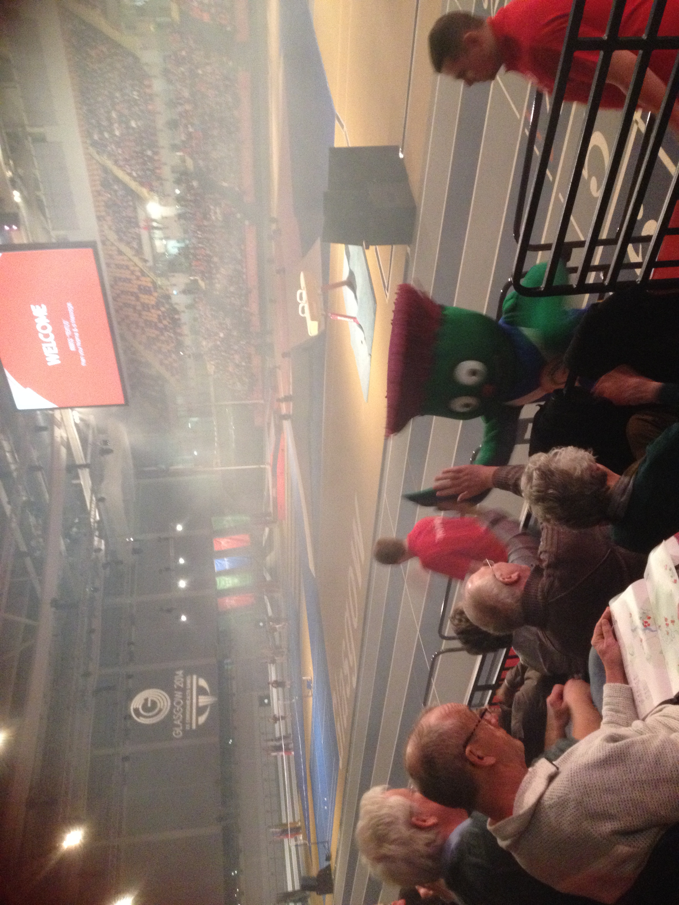

|
|
Glasgow 2014
Part 1
Having enjoyed myself so much as a Tour Maker at the London 2012 Olympics, I decided to apply to be a volunteer at the Glasgow 2014 Commonwealth Games. Having applied on-line, I had to travel to the Albion Street offices in central Glasgow, as one of the 21,000 offered an interview. The questions were very much like in the phone interview I had for London. It was a long way to go for a short interview. I spent much longer on the train than I did in the interview, but they offered no phone alternative. I was chosen to be a Clydesider in the Transport team, so I was to be a driver again. Early March saw me make the long trip up to Glasgow again for the Orienttion event, which was held at the Emirates Arena, next to Celtic Park football ground. I rang specifically to say I would be travelling for twice as long as the event lasted, would have to miss the end in order to get back to central Glasgow to get the last train home, and had been through a similar event for London 2012, but to no avail. If I didn't attend I couldn't be a Clydesider. The event was OK, pretty much a repeat of the London event at Wembley, but with Hazel Irvine as the compere. We got to meet Clyde, the mascot. They saved the best to last, ie the uniform reveal, which I, of course, missed as I had already left to get to Glasgow Central for my last possible train home.
{kind=link}
May saw me back up in Glasgow. This time I was able to kill two birds with one stone. I combined an early morning trip to the Glasgow 2014 uniform and accreditation centre in the Kelvin Hall, with my Role Specific training. The accreditation centre was very well organised. There was a one way system in operation through the Hall, from having my photo taken and the accreditation pass printed, to uniform collection. We were able to try all the uniform items on and mix and match sizes. There was a red polo shirt with grey and white sleeves, a pair of grey trousers, as usual, too long in the leg in order to go round my waist, a soft shell top in the same colours as the polo shirt, a red cagoule, bag and umbrella. The afternoon saw us have our Driver training at what was to be the Fleet depot, the Arnold Clark location on South Street. We had the safe driving training, and then went out for a bit of driving. There were no Games routes like in London. All our journeys were to follow Purple road signs, using the bog standard SatNav in the vehicles, which were all Fords. S-Max, Galaxy or Touran's, the big transit van like people carriers.